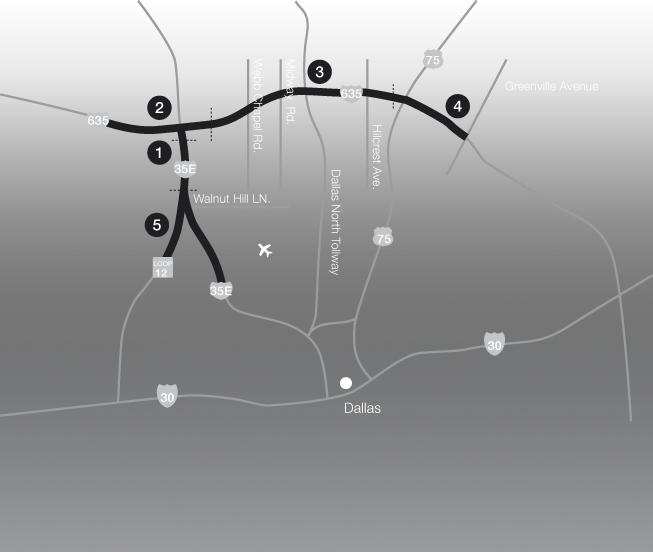

IH 635 (LBJ)
Dallas, Texas, USA
2011-2016

1
IH 35E Section (from Loop12/IH35E to Crown Rd)
2
IH 635/IH 35E Interchange
3
IH 635 Section (from east of IH 35E to approximately US 75)
4
IH 635/US 75 Interchange
5
IH 35E Capacity Improvement Section